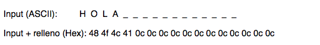

The AES algorith works with a fixed block size of 128 bits. The AESphere application allows working with big text sizes, which does not have to have sizes that are multiple of the length of the block. We then find texts that needs to be filled in order to be encrypted with AES. There are different ways of filling, the one used in AESphere is based in filling the bytes that need to be filled with the number of bytes that the text is short from being multiple of the block length. The next image illustrates it:

As we see, the string HOLA has 4 bytes, so that it is 12 bytes short from 16 bytes (which is the nearest multiple of the block length). As 12 bytes are needed to be filled, the fill until the 16 bytes is performed with the 0C hexadecimal, which stand for 12 in decimal. Even if the input is multiple of the block size, the fill is performed, in this case 16 bytes would be filled with the hexadecimal value 10.
Related information:
Encryption,Decryption.